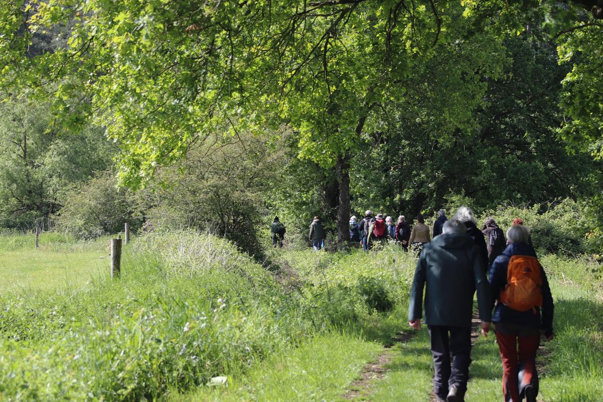
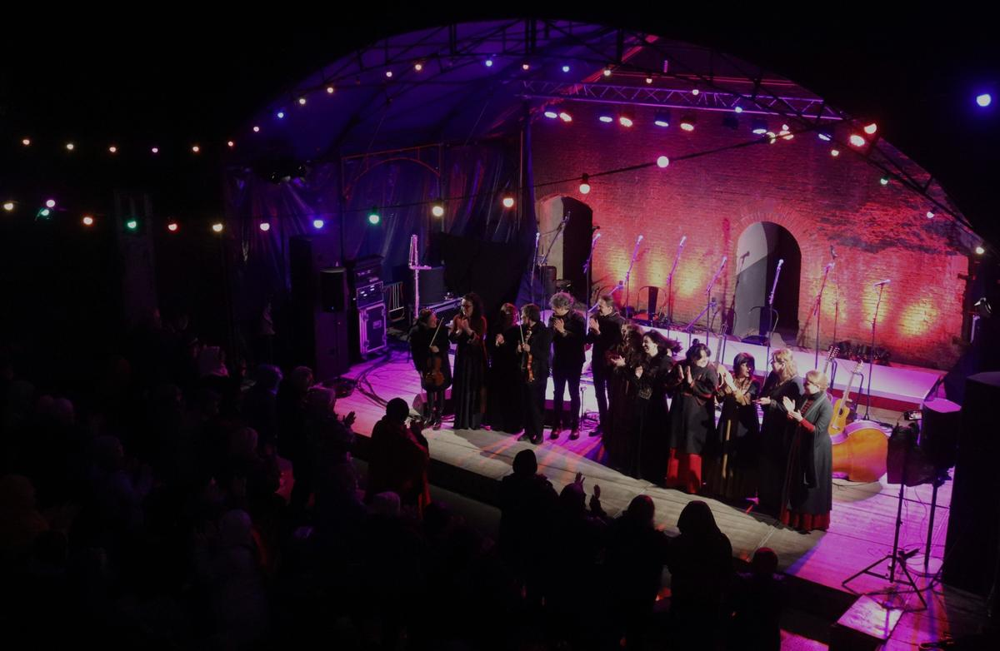

kerk – concerten2026–2027
Gwen Cresens & Philippe Thuriot
Sint-Pieterskerk, Langdorp, 20.00 uur

Agenda
-
14nov
Twee accordeons, één adem
Gwen Cresens & Philippe Thuriot
Naar de concertpagina →Korte beschrijving
Gwen Cresens en Philippe Thuriot tonen de veelzijdigheid van het accordeon in al zijn kleuren. Hun programma reikt van klassiek repertoire tot eigen bewerkingen en nieuwe composities. In duo ontstaat een intens samenspel. Een concert waarin het instrument volledig tot leven komt.
€ 22Tickets -
5dec
Gitaren van hier tot daar
Sam Grassie, Dylan Fowler & Haroun Iqbal (sco-wal-bel)
Naar de concertpagina →Korte beschrijving
Sam Grassie is een jonge Schotse gitarist en singer-songwriter die furore maakt binnen de hedendaagse Angelsaksische folkscene. Welshman Dylan Fowler is een internationaal bekende grootmeester op akoestische en klassieke gitaar. Klara-twintiger Haroun Iqbal is componist en multi-instrumentalist met invloeden uit jazz, Indiase en West-Afrikaanse muziek. Samen creëren ze een uitzonderlijk gitarenconcert, waarbij ze hun composities, met traditionele invloeden en improvisatie, zowel solo als in samenspel voorstellen.
Volzet -
11dec
Dubbelconcert: drie generaties folk en een kerstvertelling
Griff Trio: Echo + En waar de ster bleef stille staan
Naar de concertpagina →Korte beschrijving
Een dubbelconcert. Echo brengt drie generaties folk samen: pioniers van de Belgische folkrevival, Griff Trio dat hen opzocht, en twintigers uit de huidige folkscene. Documentaire en live muziek lopen in elkaar over. Daarna brengen Reineke Van Hooreweghe en Toon Van Mierlo met een 15-koppig orkest hun muzikale vertelling naar Felix Timmermans.
€ 16Tickets -
12dec
Een kerstvertelling naar Felix Timmermans
En waar de ster bleef stille staan
Naar de concertpagina →Korte beschrijving
Een verhaal van Felix Timmermans, verteld door Reineke Van Hooreweghe, met een 15-koppig orkest onder leiding van Toon Van Mierlo. Drie schooiers trekken als driekoningen van deur tot deur door het winterse Kempenlandschap: een muzikale vertelling over armoede, schuld en genade, sober en akoestisch.
Volzet -
18dec
Een kerstvertelling naar Felix Timmermans
En waar de ster bleef stille staan
Naar de concertpagina →Korte beschrijving
Een verhaal van Felix Timmermans, verteld door Reineke Van Hooreweghe, met een 15-koppig orkest onder leiding van Toon Van Mierlo. Drie schooiers trekken als driekoningen van deur tot deur door het winterse Kempenlandschap: een muzikale vertelling over armoede, schuld en genade, sober en akoestisch.
Volzet -
19dec
Een kerstvertelling naar Felix Timmermans
En waar de ster bleef stille staan
Naar de concertpagina →Korte beschrijving
Een verhaal van Felix Timmermans, verteld door Reineke Van Hooreweghe, met een 15-koppig orkest onder leiding van Toon Van Mierlo. Drie schooiers trekken als driekoningen van deur tot deur door het winterse Kempenlandschap: een muzikale vertelling over armoede, schuld en genade, sober en akoestisch.
Volzet -
20dec
Een kerstvertelling naar Felix Timmermans
En waar de ster bleef stille staan
Naar de concertpagina →Korte beschrijving
Een verhaal van Felix Timmermans, verteld door Reineke Van Hooreweghe, met een 15-koppig orkest onder leiding van Toon Van Mierlo. Drie schooiers trekken als driekoningen van deur tot deur door het winterse Kempenlandschap: een muzikale vertelling over armoede, schuld en genade, sober en akoestisch.
Volzet -
9jan 2027
Tussen oost en west
Aram: Shahab Azinmehr, Derya Türkan & Robbe Kieckens
Naar de concertpagina →Korte beschrijving
In dit project komen Midden-Oosterse en Europese klanken samen. Met kemençe, zang, andere snaarinstrumenten en percussie ontstaat een gelaagde dialoog tussen traditie en vrije interpretatie. De musici zoeken naar gemeenschappelijke lijnen in hun muzikale achtergrond. Een concert dat bruggen slaat tussen verschillende werelden.
€ 22Tickets -
30jan 2027
Tussen County Kerry en Yorkshire
The Weaving (irl-eng)
Naar de concertpagina →Korte beschrijving
Het jonge, talentvolle trio The Weaving bewijst dat Ierse en Engelse folk nog springlevend is. Méabh Begley (accordeon, zang), Owen Spafford (viool) en Cait Ni Riain (piano, zang) brengen muziek met wortels in Kerry, Tipperary en Yorkshire. Ze spelen dansmelodieën en liederen die ze vanuit hun eigen achtergrond benaderen, met ruimte voor samenspel en meerstemmigheid.
€ 22Tickets -
20feb 2027
Zuid-Franse stemmenstorm
La Mal Coiffée (fr)
Naar de concertpagina →Korte beschrijving
La Mal Coiffée is een vocaal kwartet uit Zuid-Frankrijk dat zich toelegt op Occitaanse polyfonie. De groep combineert meerstemmige zang met percussie en werkt met teksten uit de regionale traditie. Hun repertoire verbindt historische bronnen met nieuwe composities. Live ligt de nadruk op ritme, taal en collectieve zang.
€ 22Tickets -
20mrt 2027
Folk in akoestische ontmoeting
Laura Cortese’s Acoustic Evening IV, met Eliza Carthy, Jake Blount & Sarah Kate Morgan (usa-eng-uk)
Naar de concertpagina →Korte beschrijving
Voor deze vierde editie van Acoustic Evening nodigt Laura Cortese drie uitgesproken stemmen uit de internationale folk uit: Eliza Carthy, Jake Blount en Sarah Kate Morgan. Samen brengen ze een programma waarin traditie en eigen werk elkaar afwisselen, gedragen door zang en snaarinstrumenten. De focus ligt op het lied, meerstemmigheid en de directe kracht van akoestisch samenspel. Een avond waarin Britse en Amerikaanse folk elkaar ontmoeten in een intieme setting.
€ 22Tickets -
17apr 2027
Van Italië tot in Griekenland
Livia Giaffreda & Simone Frezza, Katerina Douka & Stamatis Pasopoulos (ita-gr)
Naar de concertpagina →Korte beschrijving
Livia Giaffreda is zangeres en percussioniste met een focus op Italiaanse en mediterrane tradities. Ze werkt met stem en frame drum en brengt zowel traditionele liederen als eigen interpretaties. Haar repertoire vertrekt vanuit orale tradities en krijgt een hedendaagse invulling, ondersteund door accordeonist Simone Frezza.
Katerina Douka & Stamatis Pasopoulos brengen een programma met Grieks repertoire voor zang en accordeon. Centraal staat de rebetiko, de stedelijke volksmuziek die ontstond in de havens van het Griekse schiereiland. In deze muziek klinken thema’s als migratie, verlies en verlangen door. Het duo benadert dit repertoire met respect voor de traditie en met aandacht voor tekst, melodie en samenspel.
€ 22Tickets -
5–9mei 2027
Het Hemelvaartweekend in de Merode
Merodefestival 2027
Naar de concertpagina →Korte beschrijving
Tijdens het Hemelvaartweekend wandel je overdag met muzikanten door de mooiste natuurgebieden van de Merode. ’s Avonds speelt internationale folk op de Citadel van Diest. Het volledige programma volgt in het voorjaar.
-
19jun 2027
Nieuwe klankkleuren
Sara Salvérius & blazerskwartet: Adem
Naar de concertpagina →Korte beschrijving
Met Adem brengt Sara Salvérius haar accordeon samen met een kwartet blazers, elk met een eigen achtergrond en klankwereld. Het project vertrekt vanuit de gedeelde ademhaling als bron van klank en muzikale dialoog.
Samen verkennen ze de wind die door hun instrumenten raast, soms op de weemoedige toon van een gefluisterd laatste woord, soms met het uitbundige karakter van een fanfare. Tussen compositie en improvisatie vieren ze het leven, het afscheid en de dood, in een zoektocht naar de cadans die elk leven ritme geeft. Want alles is adem.
€ 22Tickets


Ook van WESP
Concerten in onze andere reeksen, buiten de Merode.
- Holsbeek Sessies donderdag 29 oktober Eriksson Delcroix Buurthuis Nieuwrode, Holsbeek Meer info ↗ (opent een andere website)
- Holsbeek Sessies donderdag 26 november Lenny & de Wespen Buurthuis Nieuwrode, Holsbeek Meer info ↗ (opent een andere website)
- Klanken van de Steden vrijdag 27 november Aram: Shahab Azinmehr, Derya Türkan & Robbe Kieckens De Studio Antwerpen, Antwerpen Meer info ↗ (opent een andere website)
- Limburg Sessies donderdag 3 december Sam Grassie, Dylan Fowler & Haroun Iqbal Academiezaal Sint-Truiden, Sint-Truiden Meer info ↗ (opent een andere website)
- Holsbeek Sessies zondag 13 december Laura Cortese & Bert Ruymbeek Kerk, Kortrijk-Dutsel Meer info ↗ (opent een andere website)
- Holsbeek Sessies dinsdag 12 januari 2027 Kindersessies met Rémi Decker (Zigoto) Buurthuis, Holsbeek Meer info ↗ (opent een andere website)
- Holsbeek Sessies donderdag 14 januari 2027 Robb Johnson Buurthuis, Holsbeek Meer info ↗ (opent een andere website)
- Holsbeek Sessies zondag 24 januari 2027 Bao Sissoko & Haroun Iqbal Kerk, Kortrijk-Dutsel Meer info ↗ (opent een andere website)
- Limburg Sessies donderdag 28 januari 2027 The Weaving Academiezaal , Sint-Truiden Meer info ↗ (opent een andere website)
- Limburg Sessies vrijdag 19 februari 2027 La Mal Coiffée Abdijsite Herkenrode, Herkenrode Meer info ↗ (opent een andere website)
- Limburg Sessies woensdag 3 maart 2027 Troissoeur Academiezaal, Sint-Truiden Meer info ↗ (opent een andere website)
- Holsbeek Sessies donderdag 4 maart 2027 Vera Coomans & Thomas Devos Buurthuis, Holsbeek Meer info ↗ (opent een andere website)
- Holsbeek Sessies vrijdag 5 maart 2027 John Blek Buurthuis, Holsbeek Meer info ↗ (opent een andere website)
- Limburg Sessies vrijdag 16 april 2027 Livia Giaffreda & Simone Frezza, Katerina Douka & Stamatis Pasopoulos Abdijsite Herkenrode, Herkenrode Meer info ↗ (opent een andere website)
- Holsbeek Sessies zondag 25 april 2027 Liesbeth Devos & Gwen Cresens Kerk, Kortrijk-Dutsel Meer info ↗ (opent een andere website)
- PARK Festival zondag 4 juli 2027 PARK Festival 2027 Abdij van Park, Heverlee Meer info ↗ (opent een andere website)
Hemelvaartweekend · 5–9 mei 2027
Merodefestival 2027
Overdag wandel je met muzikanten door de mooiste natuurgebieden van de Merode. ’s Avonds speelt internationale folk op de Citadel van Diest. Het programma volgt in het voorjaar.


Mis geen concert
Nieuwe concerten en het festivalprogramma in je mailbox.